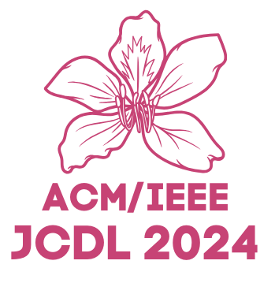

IMSC2024 Workshop
Innovation Measurement for Scientific Communication (IMSC) in the Era of Big Data
Hong Kong, China
Dec 19th, 2024
Call for Papers
You are invited to participate in the 2nd Workshop on Innovation Measurement for Scientific Communication (IMSC) in the Era of Big Data, to be held as part of the ACM/IEEE Joint Conference on Digital Libraries 2024, Hong Kong, Dec 19th, 2024 (JCDL2024).
Purpose of the Workshop
The increasingly mature artificial intelligence technologies, such as big data, deep learning, and natural language processing, provide technical support for research on automatic text understanding and bring development opportunities for innovative measurement of scientific communication. Innovation measurement in scientific communication is a challenging and cutting-edge direction in Informetrics. It is interdisciplinary, requiring considering the characteristics of different disciplines and different types of scientific outcomes to establish a comprehensive evaluation metrics system. On the other hand, metadata and content features should be considered to reflect the innovation of scientific works objectively and comprehensively. This workshop focuses on the discussion and produces enlightening outcomes. We will engage broad audiences to share their ideas and pre-productions, enabling an interdisciplinary approach to exploring frontier areas. This workshop consists of keynotes, oral presentations, and poster sessions and would attract interest from academic researchers, librarians, and decision-makers from governments and practical sectors.
Scientific innovation and breakthroughs are the primary driving forces behind technological advancement. Measuring and tracking these innovative studies is a crucial direction in informetrics and the Science of Science. In the era of big data, the development of informatics presents both opportunities and challenges. Although a large number of papers are published, the scarcity of truly innovative publications makes their automatic identification and tracking significantly difficult. Advances in artificial intelligence, particularly in natural language processing and knowledge reasoning, offer potential solutions. As stated in the Leiden Manifesto [2], quantitative evaluation should support qualitative, expert assessment. Both qualitative and quantitative methods have been proposed to measure the innovativeness of knowledge in science communication. For example, Wang et al. using coarse feature and knowledge entity network to evaluate scientific papers quality [7]. Wang et al. constructed a new index, the DDiv index, to identify interdisciplinary breakthrough innovation effectively [6]. Liu et al. using a combinatorial approach and a pre-trained Bio-BERT model to quantify the scientific novelty of doctoral theses based on bio-entities [3]. Zhang et al. explored the relationship between team institutional composition and novelty in academic papers [1]. Zhang et al. proposed a context-enhanced transformer for extracting problem and method sentences from scientific papers [8]. Meanwhile, Wang et al. explored academic influence of algorithms by co-occurrence network based on full-text of academic papers [4]. Lu et al. introduce the INTEGrity vERification (INTEGER) task to help researchers in assessing the integrity of their papers by verifying the clarity of each knowledge unit. Identifying the main factors of science and developing predictive models to capture its evolution provides a broader perspective on measuring the innovative nature of science. Therefore, we propose this workshop to gather researchers and practical users to initiate a collaborative platform for exchanging ideas, sharing pilot studies, and scoping future directions on this cutting-edge venue.
Topics of Interest
Topics of interest include, but not limited to the following:
- º The definitions of scientific novelty, innovation, impact, breakthrough, and disruption.
- º Theory, framework, and method for innovation measurement.
- º High-quality and reusable dataset for knowledge extraction and innovation measurement.
- º Innovation measurement with NLP, ML/DL, LLMs, and other techniques.
- º Knowledge extraction from academic big data.
- º Feasible and effective evaluation metrics for innovation measurement.
- º Radical and incremental innovation measurement.
- º Multi-information fusion for innovation measurement.
- º Innovation diffusion models for scientific communication.
- º Applications of innovation measurement for scientific communication
- º Interdisciplinary innovation/breakthrough measurement.
Submission Information
Regular papers: All submissions must be written in English, following the CEUR-ART style (10 pages for full papers and 4 pages for short papers exclusive of unlimited pages for references) and should be submitted as PDF files to EasyChair.
Poster & demonstration: We welcome detailed originality, early discoveries, work-in-progress and industrial applications of innovations in measurement science communication to be presented in special poster sessions, and possibly in 2-minute presentations in the main session. Some research track papers will also be invited to the poster track instead, although there will be no difference in the final proceedings between poster and research track submissions. These papers should follow the same format as the research track papers but can be shorter (2 pages for poster and demo papers).
All submissions will be reviewed by at least two independent reviewers. Please be aware of the fact that at least one author per paper needs to register for the workshop and attend the workshop to present the work. In case of no-show the paper (even if accepted) will be deleted from the proceedings and from the program.
Expected Outcomes
Outcomes of this workshop will include:
- º The accepted papers and posters will be published in CEUR Workshop Proceedings.
- º We plan to organize a special issue corresponding to this workshop on top-tier journals, the journal is to be decided. All the accepted papers and posters will be invited to submit an extended version to the special issue.
Important Dates
All dates are Anywhere on Earth (AoE).
Deadline for submission: October 31, 2024
Deadline for submission:November 15, 2024
Notification of acceptance: November 30, 2024
Camera ready: December 10, 2024
Workshop date: December 19, 2024
Keynote
TBA
Organising Committee
 Zhongyi Wang is an associate professor of School of Information Management, Central China Normal University, China. His current research interests include knowledge extraction, science of science, knowledge organization and retrieval. He serves as PC members of several international conferences and the reviewer for 8 peer reviewed journals in information science and computer science. He has published more than 50 peer-reviewed papers. His homepage is at http://faculty.ccnu.edu.cn/2012980061.
Zhongyi Wang is an associate professor of School of Information Management, Central China Normal University, China. His current research interests include knowledge extraction, science of science, knowledge organization and retrieval. He serves as PC members of several international conferences and the reviewer for 8 peer reviewed journals in information science and computer science. He has published more than 50 peer-reviewed papers. His homepage is at http://faculty.ccnu.edu.cn/2012980061.
Haihua Chen is an assistant professor in Data Science in the Department of Information Science at the University of North Texas. He has been involved in several NSF funded projects. He has expertise in applied data science, natural language processing, information retrieval, and text mining. He co-authored more than 40 publications in academic venues in both information science and computer science. Dr. Chen is serving as co-editor for The Electronic Library, the guest editor of Information Discovery & Delivery and Frontiers in Big Data special issues, the organizing committee of JCDL 2018, IEEE AITest 2023, ISKO international conference 2024, and several workshops. He is the reviewer for 14 peer reviewed journals and several international conferences. His homepage is at https://idealabunt.github.io/home/haihua-chen.html.
Chengzhi Zhang is a professor of Department of Information Management, Nanjing University of Science and Technology, China. His current research interests include scientific text mining, knowledge entity extraction and evaluation, social media mining. He serves as Editorial Board Member and Managing Guest Editor for 10 international journals (Patterns, IP&M, JOI, Scientometrics, OIR, Aslib JIM, TEL, JDIS, DIM, DI, etc.) and PC members of several international conferences in fields of natural language process and scientometrics ( https://chengzhizhang.github.io/).
Yi Bu is an assistant professor at the Department of Information Management, Peking University, China. He earned a B.Mngt. in In�formation Management and System from Peking University, an M.S. in Data Science, and a Ph.D. in Informatics from Indiana University Bloomington. His research applies multidisciplinary methods to scholarly big data. Yi aims to contextualize and elucidate the social dynamics of the global scientific ecosystem by leveraging massive datasets, computational techniques, and social theories. His homepage is at https://buyi08.wixsite.com/yi-bu.
 Wei Lu is a professor of School of Information Management and director of Information Retrieval and Knowledge Mining Center, Wuhan University. He received his PhD degree of Information Science from Wuhan University, China. His current research interests include information retrieval, text mining, QA etc. He has papers published on SIGIR, Information Sciences, JASIST, IP&M. He serves as diverse roles (e.g., Associate Editor, Editorial Board Member, and Managing Guest Editor) for several journals.
Wei Lu is a professor of School of Information Management and director of Information Retrieval and Knowledge Mining Center, Wuhan University. He received his PhD degree of Information Science from Wuhan University, China. His current research interests include information retrieval, text mining, QA etc. He has papers published on SIGIR, Information Sciences, JASIST, IP&M. He serves as diverse roles (e.g., Associate Editor, Editorial Board Member, and Managing Guest Editor) for several journals.
Jian Wu is an assistant professor of Computer Science at Old Dominion University. His research interests include natural language processing and understanding, scholarly big data, information retrieval, digital libraries, and science of science. He has published 70 peer-reviewed papers on ACM, IEEE, and AAAI venues, with best papers and nominations. He was rated the best reviewer in JCDL 2018. His homepage is at https://www.cs.odu.edu/~jwu/.
Program Committee
º Angelo Antonio, The Open University
º Hsia-Ching Chang, University of North Texas
º Sijing Chen, Central China Normal University
º Orduna-Malea Enrique, Universitat Politècnica de València
º Jiangen He, University of Tennessee at Knoxville
º Linlin Hou, Nankai University
º Xiao Huang, Central China Normal University
º Ying Huang, Wuhan University
º Jiang Li, Nanjing University
º Mauro Dalle Lu, Universidade de Campinas
º Jin Mao, Wuhan University
º Chao Min, Nanjing University
º Dongin Nam, Yonsei University
º Yan Qi, Institute of Medical Information / Medical Library. CAMS & PUMC
º Feng Shi, The University of North Carolina at Chapel Hill
º Mathias Tessma, Brazilian Institute of Education
º Yang Wang, Xi'an Jiao Tong University
º Haiyun Xu, Shandong University of Technology
º Shuo Xu, Beijing University of Technology
º Jinzhu Zhang, Nanjing University of Science and Technology
º Huanhuan Zhao, University of Tennessee at Knoxville
References
[1] Chen, Z., Zhang, C., Zhang, H., Zhao, Y., Yang, C., & Yang, Y. (2024). Exploring the relationship between team institutional composition and novelty in academic papers based on fine-grained knowledge entities. The Electronic Library.
[2] Hicks, D., Wouters, P., Waltman, L., De Rijcke, S., & Rafols, I. (2015). Bibliometrics: the Leiden Manifesto for research metrics. Nature, 520(7548), 429-431.
[3] Liu, M., Xie, Z., Yang, A. J., Yu, C., Xu, J., Ding, Y., & Bu, Y. (2024). The prominent and heterogeneous gender disparities in scientific novelty: Evidence from biomedical doctoral theses. Information Processing & Management, 61(4), 103743.
[4] Wang, Y., Zhang, C., Song, M., Kim, S., Ko, Y., & Lee, J. (2024). Exploring academic influence of algorithms by co-occurrence network based on full-text of academic papers. Aslib Journal of Information Management.
[5] Wang, Z., Chen, H., Zhang, C., Lu, W., & Wu, J. (2023, June). JCDL2023 Workshop: innovation measurement for scientific communication (IMSC) in the Era of Big Data. In 2023 ACM/IEEE Joint Conference on Digital Libraries (JCDL) (pp. 303-305). IEEE.
[6] Wang, Z., Qiao, X., Chen, J., Li, L., Zhang, H., Ding, J., & Chen, H. (2024). Exploring and evaluating the index for interdisciplinary breakthrough innovation detection. The Electronic Library, (ahead-of-print).
[7] Wang, Z., Zhang, H., Chen, H., Feng, Y., & Ding, J. (2024). Content-based quality evaluation of scientific papers using coarse feature and knowledge entity network. Journal of King Saud University-Computer and Information Sciences, 36(6), 102119.
[8] Zhang, Y., & Zhang, C. (2024). Extracting problem and method sentence from scientific papers: a context-enhanced transformer using formulaic expression desensitization. Scientometrics, 1-36.
Past workshop & Related workshop
IMSC 2023
EEKE 2024